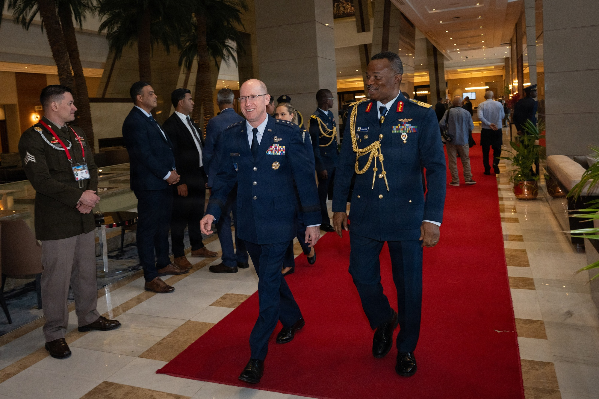

Command & Leadership
The officers who command the Nigerian Air Force, its branches and its operational commands.

Air Marshal Sunday Kelvin Aneke
Air Marshal Aneke is a career NAF officer. He was admitted to the Nigerian Defence Academy in 1988 as a member of the 40th Regular Course and commissioned in 1993. He holds a BSc in Physics and postgraduate qualifications in management, international affairs and diplomacy, and political economy and development studies.
Before his appointment he was Air Officer Commanding, NAF Mobility Command, in Yenagoa. Earlier, he was Director of Safety and Director of Policy at HQ NAF and Deputy Commandant of the Nigerian Defence Academy. He also served with the UN mission in the DR Congo and flew ISR in the Niger Delta during Operation Restore Hope.
Photo: 2026 African Air Chiefs Symposium, Tunis. U.S. Air Force photo by 2nd Lt. Eve Daugherty (public domain).
Chain of command
Branch chiefs & commanders
Appointments as announced in the redeployment approved by the CAS on 7 November 2026. Names are given as published, with initials. Appointments change regularly; check airforce.mil.ng for the current list.